1) Escopo da apresentação
Usuário operacional RH / liderançaEste tutorial cobre os fluxos principais do WF Gestão de Pessoas: cadastro de funcionários, candidatos, férias, atendimento via WhatsApp RH, vale-transporte e leitura de integrações SST por obra.
- Tela de Integrações por Obra é somente leitura no RH (manutenção pelo WF Segurança do Trabalho).
3) Cadastro de Funcionários
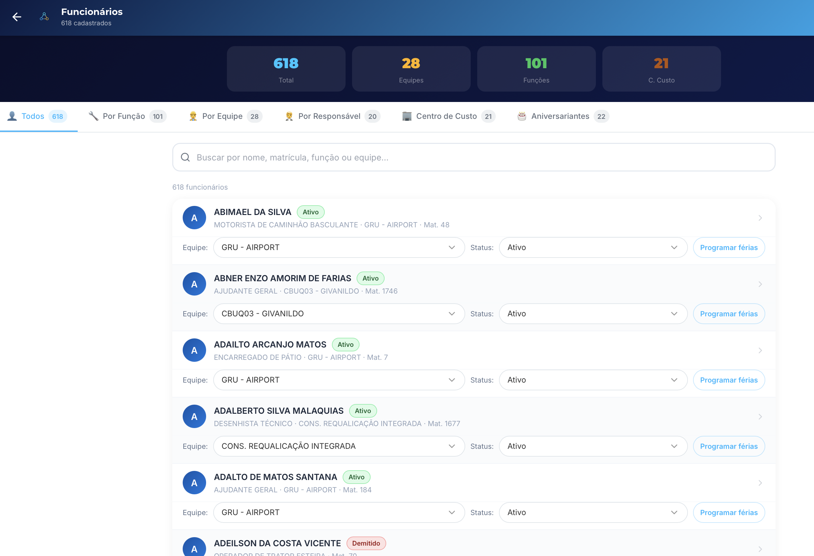
Leitura rápida da tela
- Resumo no topo: Total, Equipes, Funções e Centros de Custo.
- Abas de filtro: Todos, Por Função, Por Equipe, Responsável, Centro de Custo, Aniversariantes.
- Busca por nome, matrícula, função ou equipe.
- Ação por colaborador: ajustar equipe/status e Programar férias.
4) Ficha (Dados Cadastrais)
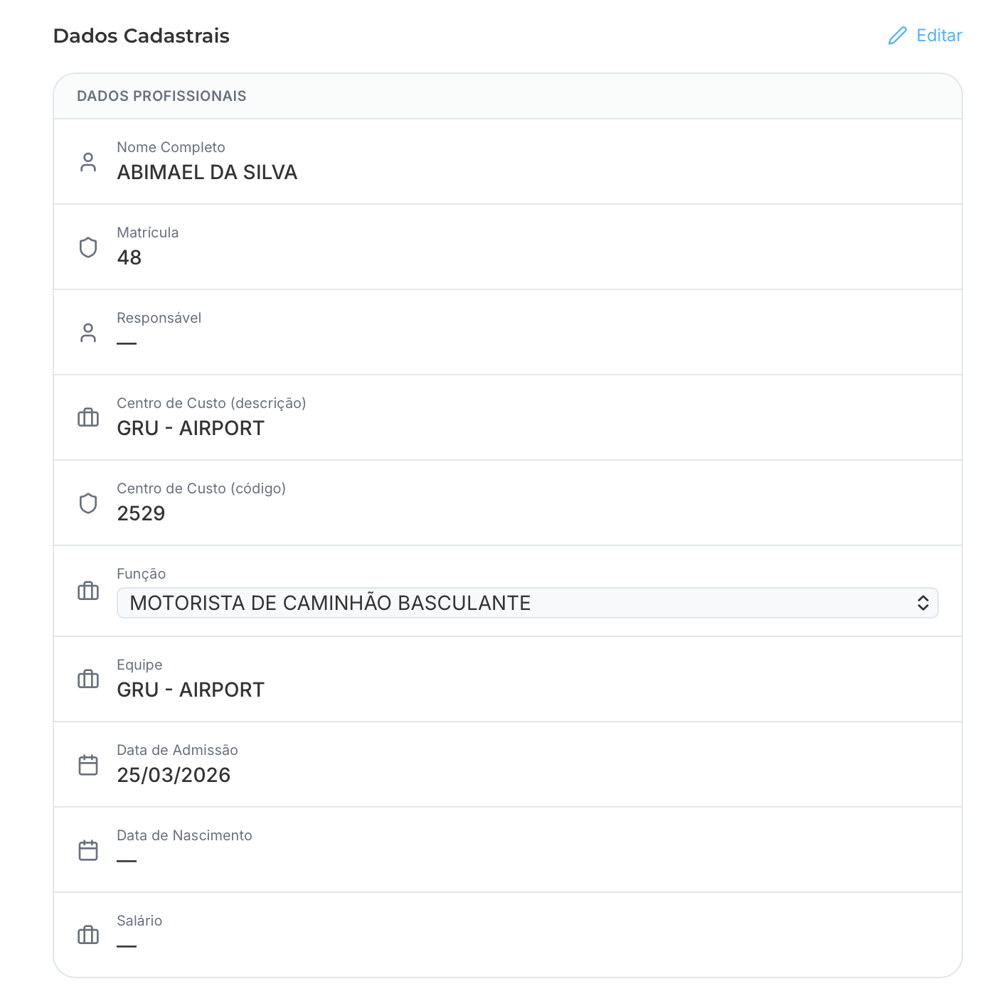
Pontos críticos da conferência
- Validar Nome, Matrícula, Centro de Custo e Equipe.
- Conferir Função vigente e Data de Admissão.
- Completar campos pendentes (Responsável, Nascimento, Salário) quando necessário.
- Usar botão Editar para atualizar cadastro.
5) Ficha: Anexo de Documentos
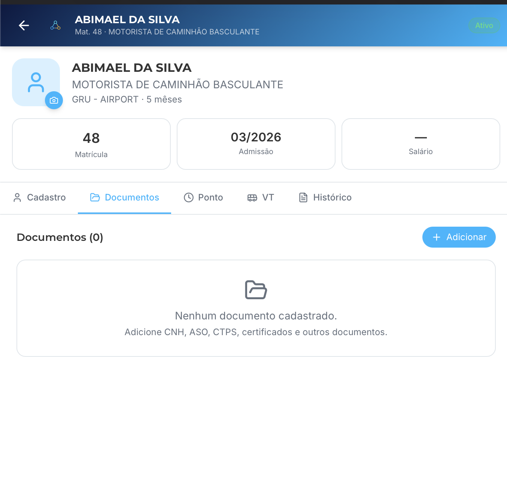
Controle documental individual
- Acessar aba Documentos dentro da ficha do funcionário.
- Usar botão Adicionar para anexar CNH, ASO, CTPS e certificados.
- Conferir contador de documentos por colaborador para evitar pendências ocultas.
- Padronizar nomes/descrições dos anexos para facilitar auditoria e busca.
6) Ficha: Histórico individual (ocorrências)
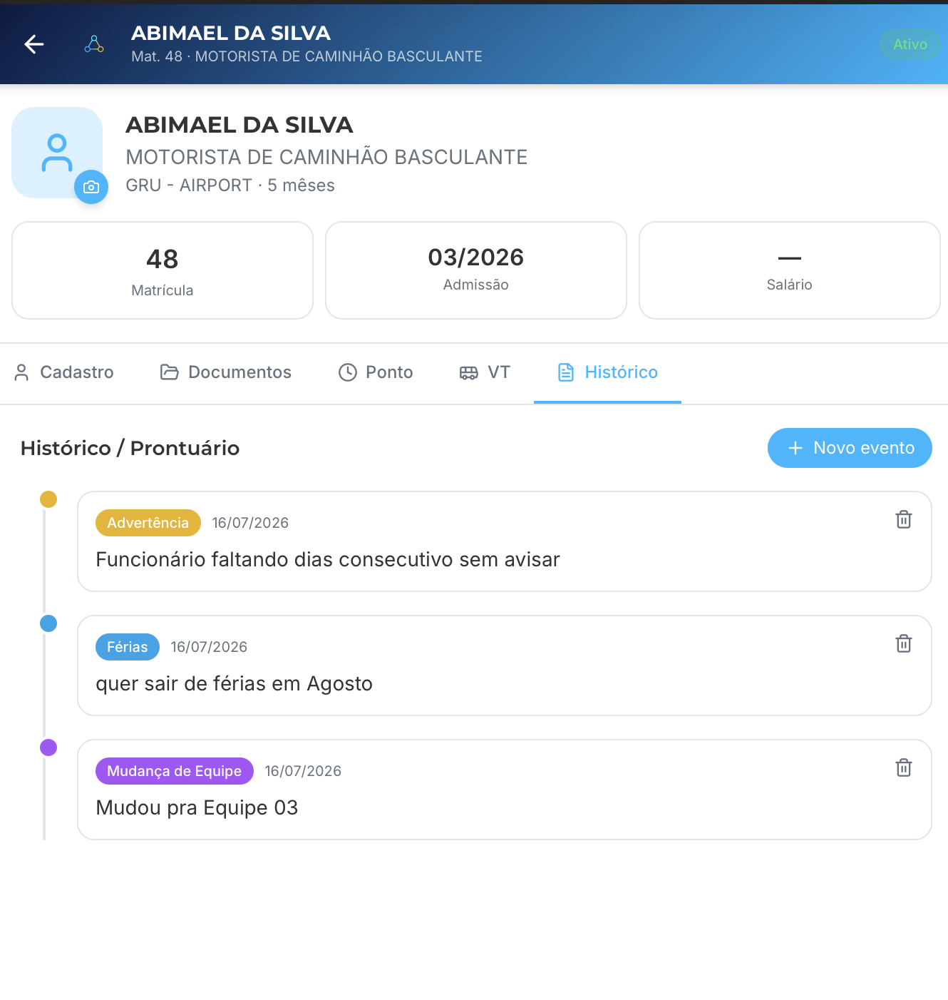
Prontuário por colaborador
- Registrar no Histórico/Prontuário ocorrências como advertência, férias e mudança de equipe.
- Usar Novo evento com descrição objetiva e data correta.
- Manter rastreabilidade individual para decisões de RH e liderança.
- Revisar periodicamente eventos antigos para manter histórico confiável.
7) Banco de Candidatos
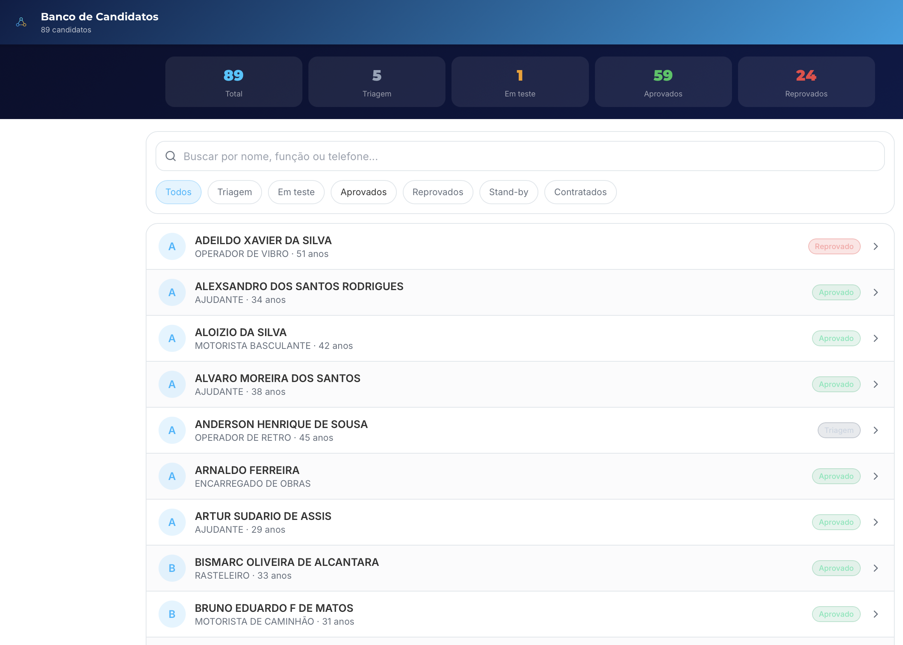
Gestão de funil
- Monitorar cards de status: Triagem, Em teste, Aprovados e Reprovados.
- Filtrar por etapa para priorizar atendimento diário.
- Buscar por nome, função e telefone.
- Abrir candidato para registrar entrevista, teste e observações.
8) Processo Seletivo (detalhe do candidato)
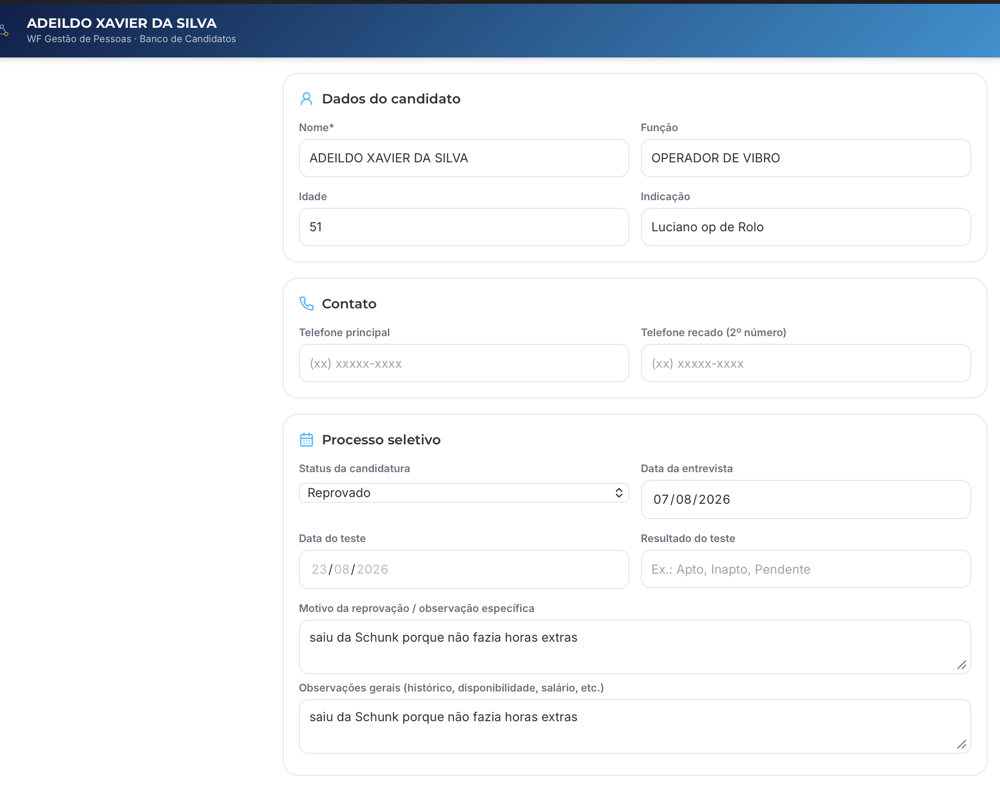
O que registrar na ficha
- Dados do candidato: nome, função, idade e indicação.
- Contato: telefone principal e recado.
- Processo seletivo: status, data de entrevista, data/resultado de teste.
- Motivo de reprovação e observações gerais com texto objetivo.
9) Programação de Férias
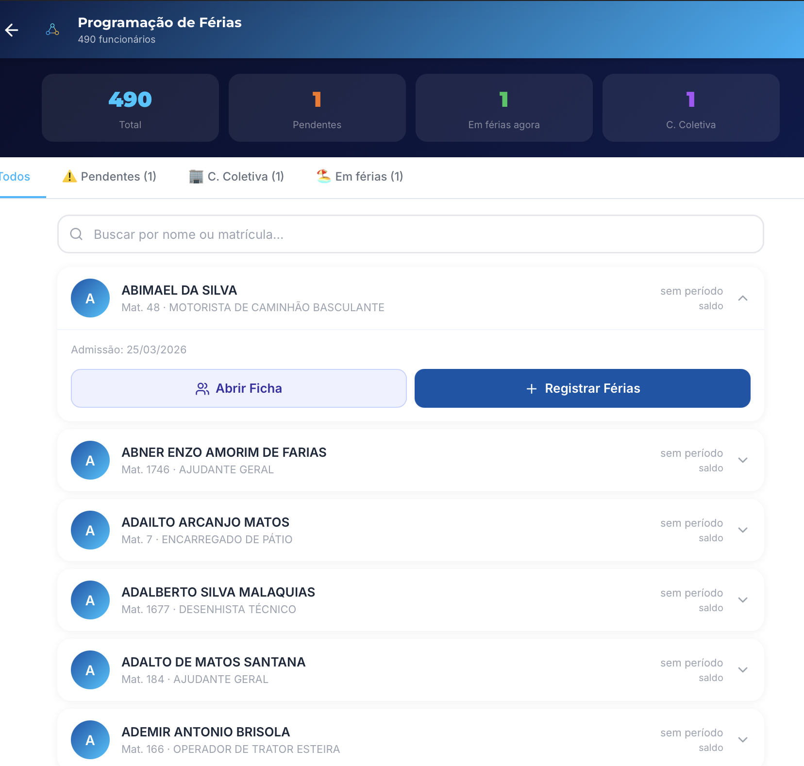
Operação diária
- Usar filtros: pendentes, coletiva e em férias.
- Buscar por nome/matrícula para localizar rápido.
- No card do colaborador: abrir ficha e registrar período.
- Conferir admissão e saldo/período antes de confirmar.
10) WhatsApp RH
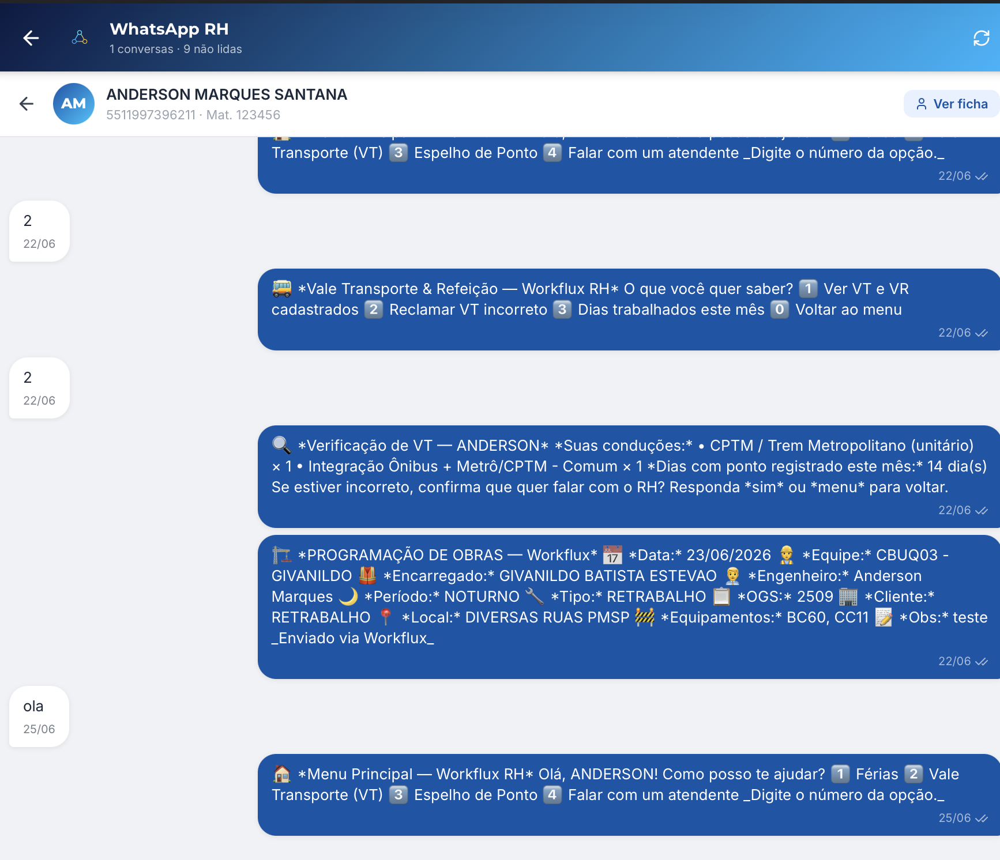
Atendimento e rastreabilidade
- Menu principal orienta: Férias, VT, Espelho de Ponto e Atendente.
- Mensagens ficam registradas por matrícula e telefone.
- Usar Ver ficha para consultar o colaborador sem sair do atendimento.
- Escalar para atendente humano quando o bot não resolve.
12) Trajeto e VT (cálculo)
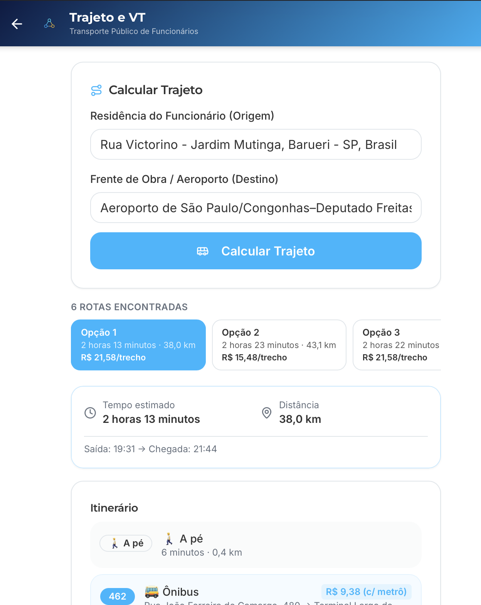
Passo a passo
- Informar origem (residência) e destino (obra/aeroporto).
- Clicar em Calcular Trajeto.
- Comparar opções por tempo, distância e custo por trecho.
- Selecionar rota para ver itinerário detalhado.
13) Itinerário e custo mensal
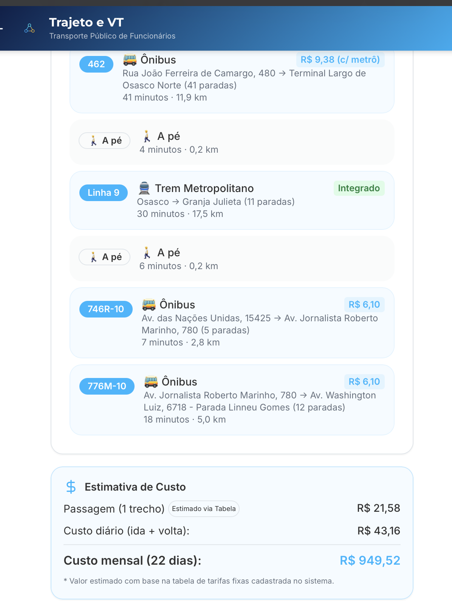
Como validar custo
- Conferir segmentos: ônibus, trem e caminhada.
- Checar tarifa por trecho e integração quando houver.
- Validar custo diário (ida + volta) e custo mensal (22 dias).
- Registrar eventual ajuste quando a tarifa real divergir da tabela.
14) Integrações por Obra (SST)
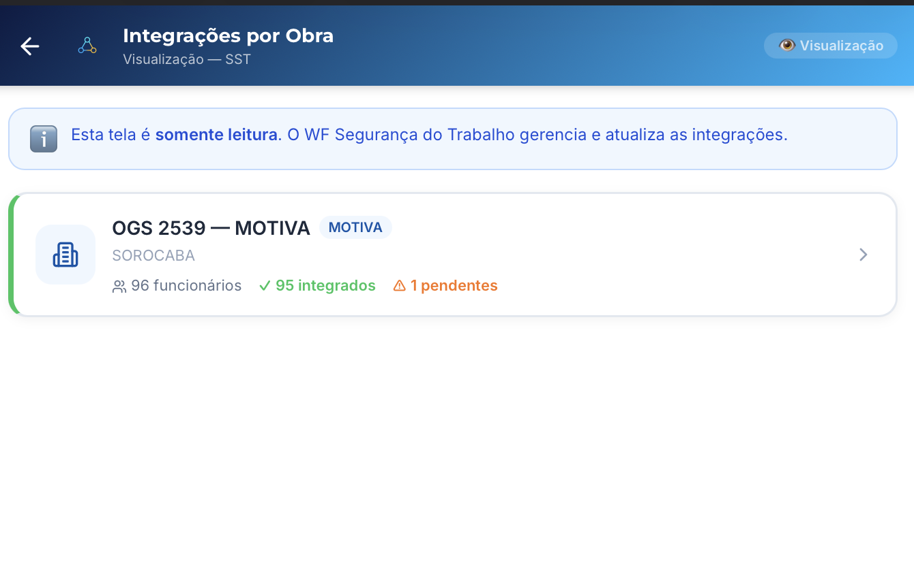
Leitura de status
Somente leitura- Ver total de funcionários, integrados e pendentes por OGS.
- Abrir obra para listar quem está integrado.
- Atualizações dessa tela são gerenciadas pelo WF Segurança do Trabalho.
15) Integrados por obra (lista)
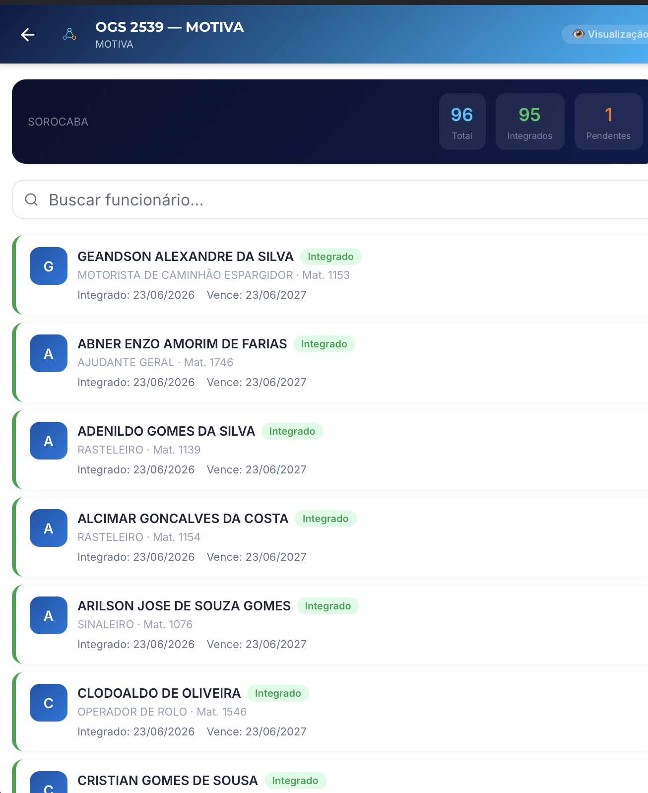
Conferência operacional
- Filtrar/buscar colaborador para checagem rápida em campo.
- Conferir validade da integração (data de vencimento).
- Identificar pendentes para encaminhar ao SST.
16) Checklist diário (rápido)
- Conferir entrada no menu e abrir o submódulo correto (Funcionários, Candidatos, Férias, VT ou WhatsApp).
- Atualizar dados críticos de cadastro e status de processo seletivo.
- Anexar documentos obrigatórios na ficha (CNH, ASO, CTPS, certificados).
- Registrar ocorrências individuais no Histórico/Prontuário.
- Registrar férias com período/saldo corretos.
- Validar rota e custo de VT antes de consolidar benefício.
- Consultar Integrações por Obra e encaminhar pendências ao SST.